GPD Win2掌機的出現，確實填補司徒心中夢寐以求的掌機位子，雖然尺寸大了點，不過至少設計的比較窄邊框，加上整體做工紮實，實為難得的掌機，而對司徒來說，比較大的問題在於螢幕的軸承，不再像GPD Win1掌機那樣，可以自由調整到想要的角度，因為該軸承會在0度以及180度時，自動吸附，因此，即使調整到165度，只要稍微晃一下，就會變成180度，因此，司徒一直在想辦法改善這個問題，最終使用一塊擋板解決，過程說明如下
司徒使用OpenSCAD畫了一個擋板
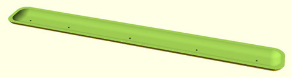
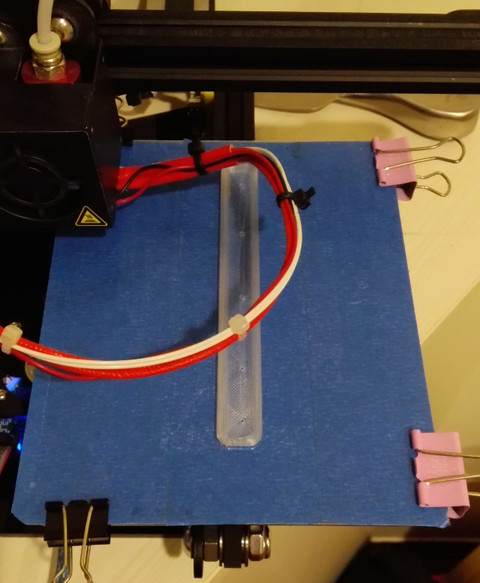
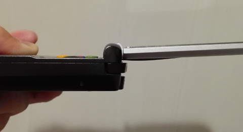
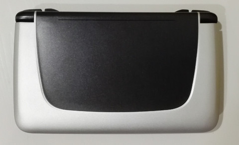
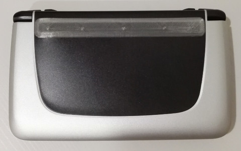
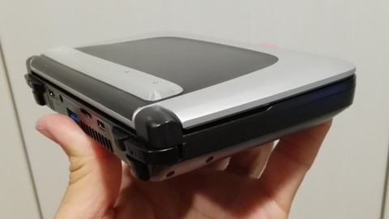
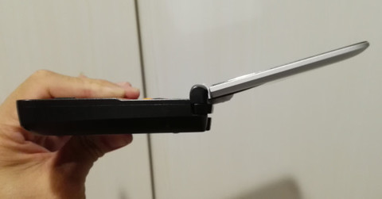
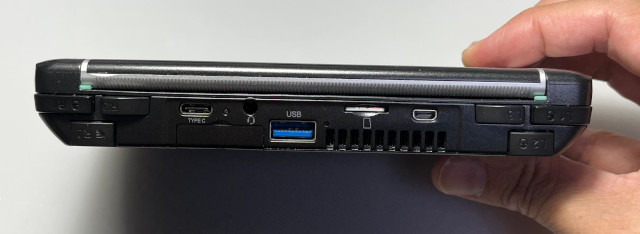
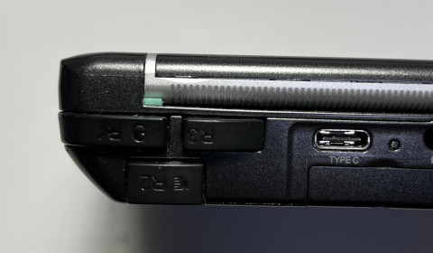
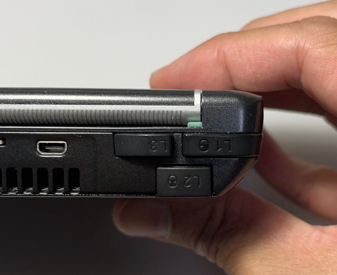
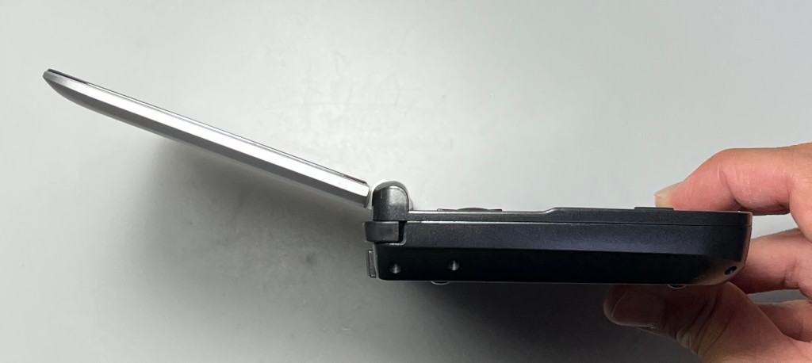